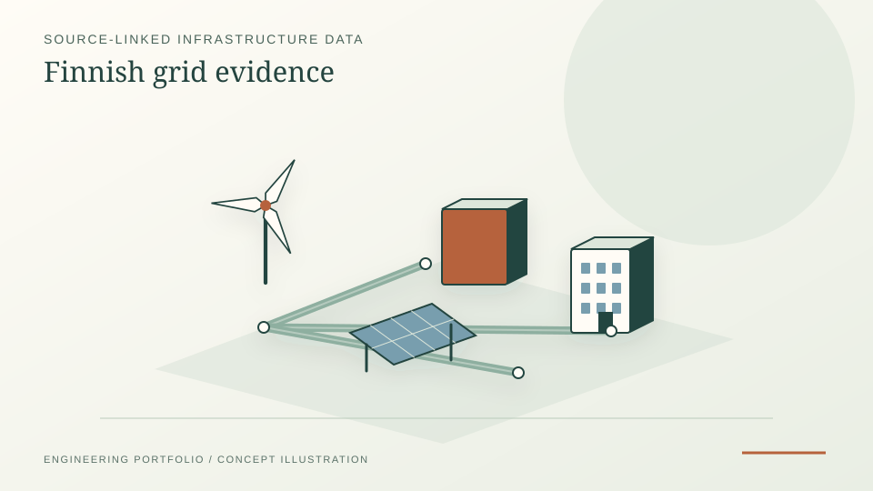

18 original Fingrid Grid Scope readings rechecked against 18–19 October screenshot evidence; not operator-confirmed availability.
Fingrid · ENTSO-E · provenance · evidence database
Finnish Grid Connection Evidence Screener
An independent source-linked grid-data tool that separates published indicative capacity observations, historical national operational data and hypothetical future model scenarios. This project demonstrates how I build defensible infrastructure-data workflows, preserve source provenance and uncertainty, and stop a dashboard from presenting indicative estimates as operational availability.
PythonSQLiteNext.jsPostgreSQLFingridENTSO-E

PROJECT REFERENCE / FINNISH-GRID-CONNECTION-EVIDENCEPreserves missing years, direction, units, revisions and citation links instead of interpolating or inventing values.
Separates historical national operational series from future scenarios and connection-point availability assumptions.
Work and evidence
- Original capacity capture: 18 source-transcribed Fingrid Grid Scope values, corresponding to 17 tooltip and one panel-value matches against screenshots during the 18–19 October 2026 audit.
- Coverage: the initial five-point, two-direction, three-year outlook shows 18 observed intersections and 12 not present in the compiled capture; absent values are not treated as zero.
- Data workflow: Python ingestion, SQLite evidence records, revision-aware histories, source and unit checks; a read-only Next.js/Neon API and an original Streamlit Atlas are documented in the repository.
- Operational context: the live-source pipeline covers Fingrid datasets 124/74 and ENTSO-E actual load/generation categories. These are historical national series, not substation-level connection forecasts.
Method and judgment
Evidence rather than invented availability
- Keep the operator's published point name, direction, unit, year, source URL, capture time and caveat attached to each observation.
- Preserve missing and conflicting observations as explicit uncertainty; never interpolate between published years or sum indicative point capacities.
- Keep operational data, planned projects, operator confirmations and modelled scenarios in separate database categories with independent evidence-status checks.
- Publish versioned audit logs and software tests for ingestion and display, while reserving grid-flow and operator-confirmation work for later stages.
Scope and evidence boundary
Limits that matter.
This is an independent portfolio screening and research application, not Fingrid or another operator's service. Indicative published MW/MVA values are not guaranteed grid headroom or a connection entitlement. No operator-confirmed capacity, model-scenario result or completed nodal load-flow planning model is claimed. A live website is listed in the repository, but this portfolio entry does not independently certify the deployment's current uptime or its API values.
Demonstrated judgment: This project demonstrates how I build defensible infrastructure-data workflows, preserve source provenance and uncertainty, and stop a dashboard from presenting indicative estimates as operational availability.
Primary evidence